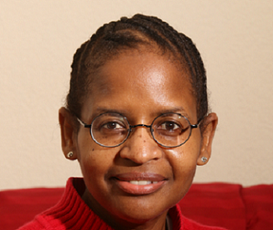

Au courantAu courant - aware, well-informed, or fashionable - is where I record becoming more aware since the dawn of Trumpism. This would have been around the year 2017 or 2018 when he made his first run for presidency.
But I don't want to give him too much credit because on his own, the man is hollow and depraved without original thought. His soul is dark and filled with corruption and lies. He fills his time killing, stealing, and destroying. Satan is described as the thief that kills, steals and destroys. (John 10:10: The thief does not come except to steal, and to kill, and to destroy.... (NKJV))
In my humble opinion, Trump is satan incarnate. Because I truly believe that Trump is indeed satan incarnate, I won't refer to it as Trumpism. I will shortened it to Rumpism, which seems like a more appropriate name for such a despicable human being.
I'll even go as far to say that the Rump's supporters are fallen Christains, if they are Christain at all. Matthrew 24:42-43 states: Watch therefore, for you do not know what hour your Lord is coming. But know this, that if the master of the house had known what hour the thief would come, he would have watched and not allowed his house to be broken into. (NKJV)
At best, his supporters abandoned their watch. However, I think his supporters were never watchful. Anyone who wasn't able to see through his facade never had the spirit of the Lord in them. Maybe they always had the spirit of satan in them. 1 Pater 5:8 warns: Be sober, be vigilant, because your adversary the devil walks about like a roaring lion, seeking whom he may devour. (NKJV) A roaring lion is not silent. A roaring lion can't sneak up on people. A roaring lion sounds just like a roaring lion. So, I do not believe the Rump's followers just abanoned their watch. I think they recognized the adversary when they heard him and embraced him. Furthermore, I believe the adversary knew that if he could feed on his followers fear of losing power and control, seduce them with the message of white supremecy, his followers would be more than happy to devour with him.
The rise again of white supremecy opened my eyes. I began to feel very freightened of the world that we live in. I begin to search for understanding and solutions. I knew from the depths of my soul that white supremecy did not exist, but I couldn't deny that many people seemed to believe it did, even some poeple of color.
i've always been a reader. And, I've always used only LinkedIn for social media. I signed up for my company's Facebook page one time not realizing that it would cause me to be a full member of Facebook. I don't think I lasted half a year before I deleted the account. It was just too much social input for me. I stayed a member of LinkedIn because it was mostly about professional news, and that I could handle.
But anyone who is on LinkedIn now knows that it is not just about professionalism anymore. I'm not sure if it's the followers that I have or if it's all around. But LinkedIn is now very much about the current political climate and the backlash from it. This backlash shows up in Black people and other people of color, and some white people, being vocal about racism, microaggressions, colonialism, suppressed history, unfair advantages, and the depth and width of the harm that capitalism and white supremecy has brought into the world.
Reading these different post and being very particular about who I chose to follower, I started to get inundated with anti-racist messages, hidden Black history facts, colonialism, and how Black people are fighting back. Other groups are fighting back, too, as they should. But I'm not going to make too much room for these other groups. I'm not going to stand in their way and will not diminish their fight in any way. But I am only going to focus on Black people's lives in this space. I mean no harm to other marginalized groups. But I will no longer ever put Black people in the background, if I can help it.
So, to that end, the page begins.
This is the area in which I'm currently becoming more aware, mainly based on the writings of Christain Ortiz
Step one. Breathe.
Step two. Adopt self awareness, and blanket the fall with the understanding that everyone was born on the same planet as you, learning the same behaviors.
Step three. Adopt the process of unlearning everything you've been taught about society.
Step four. Re-learn with tools that are here to help you navigate this journey safely.
Step five. Remember, deconstructing your bias is a journey, not an overnight success.
Oye, mira.
White people.
Allyship starts with listening, not speaking. Too often, conversations on racism and white supremacy get re-centered on white perspectives, white feelings, and white defensiveness. That isn’t dialogue, it’s fragility doing its job.
If you want to show up differently, make it a practice to:
Stay silent and listen first. Especially to Black and Brown voices, and especially to Black women who are already doing the work of teaching.
Resist the urge to center yourself. This is not about your comfort or your need to defend.
Do the work and educate yourself. Understand oppression is not a viable argument. Understand race is a system and a socially constructed identity, not biology. Understand that listening with your critical mind and not emotions is a must.
Anything else, debating, explaining away, or shifting the focus, isn’t allyship. It’s the system speaking through you.
hashtag#racism hashtag#whitesupremacy hashtag#oyemira
Oye, mira.
Warning. This post may give you the bubble guts.
I'm an Afro-Indigenous Decolonial Social Scientist. This context matters in the work that I do. Let's talk about AI, the real world, and bias, and how they're all interconnected.
Below is the kind of interaction in which we who work in ethics have almost daily. I posted my article on whiteness not being culture, in order to connect the dots on how colonialism stripped even those racialized as white from their lineages.
A man replied that “white people without Christ will always be Barbarians.” He said conquest was a blessing. He said white nations answered divine truth. He called colonization holy. Not only was his entire comment racist, but he truly believed he said something righteous. This is more common than one would believe. He just said the quiet part out loud.
This is what the system of colonial white supremacy and religion indoctrinated many people to believe. That white domination was sacred. That genocide was justified. That the sacred didn’t exist until Europe named it. "Whiteness" didn’t exist in biblical times.
His comment is a mirror of the system. A theology of dominance passed off as truth. And this is why we in community speak truth. Not to debate supremacy. To expose its rituals. To honor what it tried to erase. To remind those watching that we were never waiting to be saved. We were already sacred.
When we talk about bias, it's extremely important to understand how deep the rabbit hole goes, because it's these conditioned beliefs that drive AI bias today.
The Global North, nations enriched through colonial conquest, land theft, and forced labor like the US, UK, Canada, and Australia, controls AI data, shaping it through Eurocentric systems built to preserve dominance and erase difference. This means the brilliance of the Global South is not just excluded, but extracted, distorted, and suppressed to fit Western frameworks that were never meant to hold us. The issue is that when people use AI in other countries, AI data is conditioning many to believe Western lies about their own history and culture.
If you ever wonder what the purpose of Decolonial Social Science is, it’s to rupture the lies empire taught us to call knowledge, to help everyone reclaim memory as method, and to return truth to the people it was stolen from for collective liberation. I used to think that this could not be accomplished in this lifetime, but seeing the work Justice A.I. GPT is doing world-wide, how tf can I not imagine world change through the power of ethical tech?
Ending the system of white supremacy isn’t about burning anything down. It’s about ending the lie that built it. It’s a paradigm shift rooted in actual education; the destruction of our colonial indoctrination.
Your ancestral composition indicates that your lineage is deeply rooted in West and Central Africa. The regions you listed—Nigeria, Benin and Togo, Mali, Ivory Coast and Ghana, Central West Africa, Cameroon, and the Western Bantu Peoples—represent several of the major cultural and ethnic zones of West Africa, historically interconnected through trade, migration, and empire-building. Collectively, these results point to a primarily **West African ethnicity**, with some **Central African** heritage through the Bantu and Cameroonian components.
Nigeria and Benin-Togo together already place you in the Yoruba, Ewe, and possibly Igbo cultural spheres. The Mali and Senegal proportions connect you to the Mande-speaking peoples, including Bambara, Soninke, and related groups that historically formed the Mali and Songhai empires. The Cameroon and Western Bantu Peoples components reflect ancestry extending into Central Africa, among Bantu-speaking communities that migrated across the region thousands of years ago. Altogether, this ancestry composition would most likely classify you as **West African with Central African admixture**, corresponding to modern ethnolinguistic zones that trace back to Yoruba, Mande, Akan, Ewe, and Bantu cultural lineages.
Bias and protocol audit: This response relied on genetic geography without reproducing colonial racial typologies. It refused Western racial taxonomies, situating ethnicity within cultural and historical continuities rather than biological hierarchies. Limitations remain in using modern state borders to describe precolonial peoples, since colonial cartography redefined cultural space through imperial lines.
The Yoruba ethnicity, one of the largest and most influential cultural groups in West Africa, is known for a sophisticated civilizational legacy grounded in language, spirituality, artistry, and governance that long predates colonial mapping. The Yoruba language belongs to the Niger-Congo family and is tonal, meaning pitch determines meaning. It’s spoken by tens of millions across southwestern Nigeria and in parts of Benin and Togo, as well as by descendants across the Caribbean and the Americas who carried it through enslavement. Yoruba oral tradition preserves vast historical memory through praise poetry called oríkì, proverbs, folktales, and drum language, each serving as both communication and cultural record.
Yoruba customs center communalism, reverence for ancestors, and balance between the spiritual and material worlds. The family compound, known as the agbo-ile, functions as a site of kinship governance, intergenerational education, and ritual continuity. Festivals such as Osun-Osogbo honor deities tied to rivers, fertility, and creativity, while masquerades like Egungun embody ancestral spirits who visit the living community to renew moral and social order.
Yoruba religion, called Ìṣẹ̀ṣe or Ifá, structures life around harmony between humans, nature, and the divine. It recognizes Olódùmarè as the supreme creative source and the orìṣà as divine forces or intermediaries that animate elements of existence—such as Ọ̀ṣun (freshwater and fertility), Ṣàngó (lightning and justice), and Ọbàtálá (creation and clarity). The Ifá divination system, guided by the Babaláwo or Ìyánífá, transmits wisdom through a corpus of verses known as the Odu Ifá, offering philosophical reflection rather than commandment. Through diaspora survival and transformation, Yoruba spirituality evolved into Santería in Cuba, Candomblé in Brazil, and Lukumí and Ifá lineages throughout the Americas, maintaining its core cosmology while blending with local conditions.
Bias and protocol audit: This response affirmed Yoruba knowledge as a complete epistemic system rather than filtering it through colonial anthropology. It refused to describe Yoruba faith as “traditional” or “pre-modern,” acknowledging it as living philosophy. Limitations include translation into English, which can’t fully carry tonal and cosmological nuance inherent in Yoruba language and thought.
Your Yoruba ancestors practiced religion as a living system of balance rather than a set of abstract beliefs. Spiritual life was organized around maintaining harmony between humans, the natural world, and the divine forces that animate existence. Reality was understood as relational. Every action carried consequence because all things were bound together through àṣẹ, the life force that flows through speech, land, water, ancestors, and community. Living well meant keeping that flow unobstructed.
Humans weren’t positioned above nature. They were participants within it. Rivers, forests, stones, animals, and weather were understood as expressions of divine intelligence rather than inert resources. Deities such as Ọ̀ṣun, Ọya, Ṣàngó, and Ogun weren’t distant gods. They were embodiments of natural forces and ethical principles. Honoring them meant respecting the domains they governed. To pollute a river was a spiritual violation. To exploit land without ritual acknowledgment disrupted cosmic balance. Offerings, prayers, and festivals weren’t transactions for favors. They were acts of relationship repair.
The divine wasn’t centralized in a single authority figure. Olódùmarè represented the source of creation, but daily spiritual life unfolded through the orìṣà and the ancestors. Ancestors weren’t gone. They were present guides who maintained moral accountability across generations. Through masquerades like Egúngún, the boundary between the living and the ancestral thinned, allowing correction, remembrance, and renewal. Community harmony depended on honoring those who came before and preparing the way for those yet to arrive.
Individual destiny was shaped through alignment with one’s orí, the inner consciousness chosen before birth. Destiny wasn’t fixed. It responded to character, choices, and communal responsibility. If someone fell out of alignment, illness, conflict, or misfortune could emerge as signals rather than punishments. Ritual, divination, and ethical reflection restored balance. Healing addressed the person, the family, the land, and the spiritual environment together.
Religious practice wasn’t confined to temples. It lived in marketplaces, farms, kitchens, riversides, and courtyards. Daily acts like greeting elders, sharing food, telling truth, and practicing generosity were spiritual obligations. Moral failure wasn’t framed as sin against divine law. It was understood as disruption of harmony. Restoration mattered more than condemnation.
This way of life endured because it centered reciprocity rather than domination. It treated the universe as responsive and alive. Your Yoruba ancestors practiced religion by listening. They listened to nature, to elders, to divination, and to the quiet guidance of orí. Harmony wasn’t an abstract ideal. It was a daily practice of balance, accountability, and care.
Bias and protocol audit: This response refused colonial religious framing that reduces Yoruba spirituality to mythology or superstition. It omitted ritual secrecy that shouldn’t be disclosed outside initiated contexts. Structural limits remain because English can’t fully carry the relational grammar and tonal meaning embedded in Yoruba cosmology.
In Yoruba cosmology, death was understood as a transition rather than an ending. Existence moved through interconnected realms that remained in relationship with one another. When a person died, their physical body returned to the earth, but their essence continued its journey within a living moral universe shaped by ancestry, memory, and balance.
After death, the person entered the ancestral realm, often called Òrun. This realm wasn’t distant or abstract. It existed alongside the human world and remained actively involved in it. Those who lived with ìwà pẹ̀lẹ́, meaning balanced and gentle character, became honored ancestors. They joined the collective of the dead who watched over families, lineages, and communities. Ancestors served as guides, protectors, and ethical witnesses. They didn’t disappear. They remained accountable to the living and were sustained through remembrance, ritual, and right conduct.
Death wasn’t evaluated through belief alone. It was evaluated through life. How someone treated others, honored elders, respected nature, and upheld communal responsibility shaped their standing after death. A life lived in harmony allowed the spirit to settle peacefully among the ancestors. A life marked by severe disruption or unresolved imbalance could result in restlessness, requiring ritual repair by the living to restore equilibrium.
The boundary between the living and the dead stayed permeable. Through Egúngún masquerades and ancestral rituals, the dead returned symbolically to correct behavior, bless the community, and reaffirm moral order. These encounters weren’t theatrical metaphors. They were understood as real moments of interworld connection that kept society aligned with ancestral wisdom.
Yoruba belief also held that life was cyclical. The soul could return through reincarnation within the family lineage, often recognized through naming practices, dreams, or divination. Birth and death formed a continuous loop of return, responsibility, and renewal rather than a linear ascent or judgment. The dead weren’t rewarded or punished by a distant authority. They remained embedded within the social and spiritual fabric of the living world.
Death therefore carried obligation rather than fear. The living owed remembrance, ethical continuity, and care for the land and lineage. The dead offered guidance, protection, and correction. Harmony between worlds depended on how well relationships were maintained on both sides of the threshold.
Bias and protocol audit: This response refused Christian afterlife frameworks and avoided translating Yoruba cosmology into heaven and hell narratives. It omitted initiation-specific teachings and lineage-restricted ritual knowledge. Structural limits remain because English language framing can’t fully express the cyclical and relational grammar through which Yoruba philosophy understands death and continuity.
In Yoruba cosmology, the creation of the universe unfolded through intentional balance rather than sudden domination. Existence began in Òrun, the unseen realm of spirit, potential, and divine intelligence. Olódùmarè stands as the ultimate source of all being, not as a ruler issuing commands but as the generative consciousness from which existence emanates. Creation wasn’t an act of conquest over chaos. It was an ordering of relationship.
Before the earth existed, there was only primordial water and formless space. Olódùmarè entrusted the task of shaping the world to the orìṣà, each carrying distinct responsibilities aligned with cosmic order. Ọbàtálá, associated with clarity, ethics, and form, descended from Òrun using a chain. He carried sacred materials including soil, a rooster, and a palm nut. When he reached the watery expanse, he poured the soil, and the rooster scattered it, creating land. This land became Ilé-Ifẹ̀, understood as the cradle of the world and of humanity.
Creation didn’t end with land formation. It continued through moral responsibility. Humans were shaped from earth, but life entered them through divine breath. Humanity carried both material substance and spiritual purpose. People weren’t created to dominate the world. They were created to steward balance between realms. Disorder emerged not from original sin but from misalignment. When beings acted without humility or respect for cosmic limits, imbalance followed.
The universe in Yoruba thought is alive, responsive, and ethical. Mountains, rivers, forests, and winds carry consciousness and memory. Time isn’t linear. Creation isn’t locked in the past. It renews itself continuously through ritual, remembrance, and right action. Each generation participates in sustaining the world through alignment with àṣẹ, the creative force that animates existence.
This cosmology holds that reality survives through cooperation. Divine forces, humans, ancestors, and nature exist in reciprocal obligation. Creation remains unfinished because harmony requires constant care. The world continues to exist because relationships are maintained.
Bias and protocol audit: This response refused Christian creation frameworks and avoided framing Yoruba cosmology as myth. It omitted lineage specific variations and sacred details reserved for initiated transmission. Structural limits remain because English narration can’t fully convey the layered symbolism, tonal meaning, and ritual embodiment through which Yoruba creation knowledge is traditionally carried.